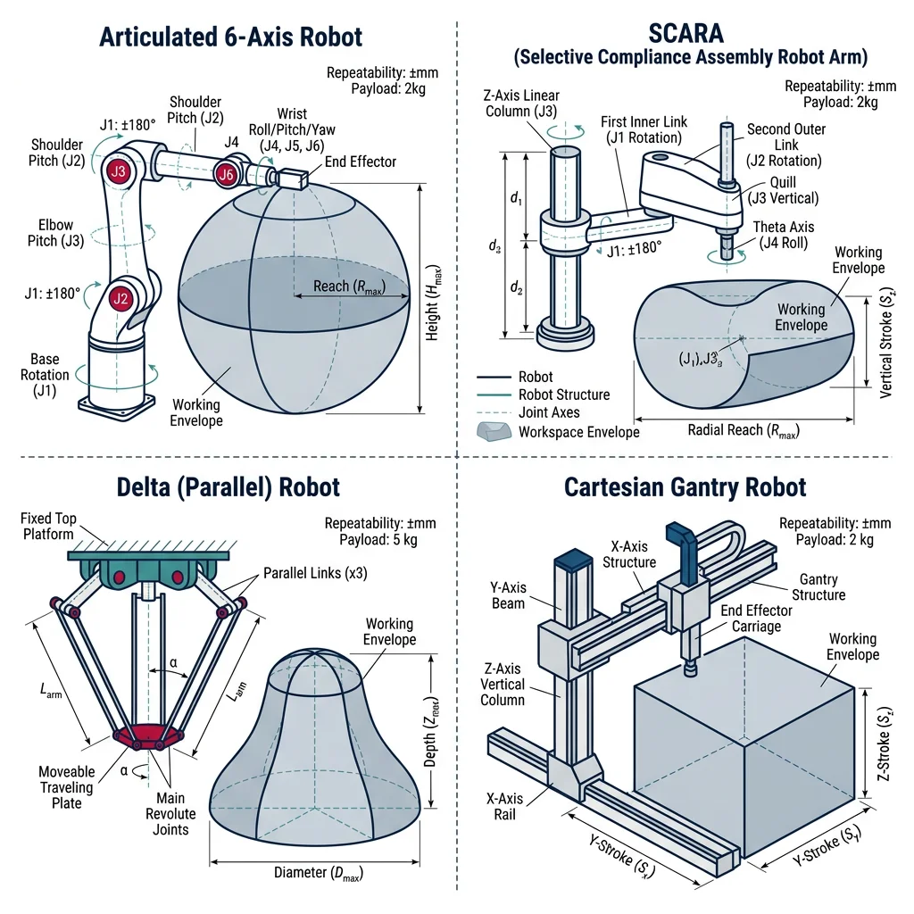
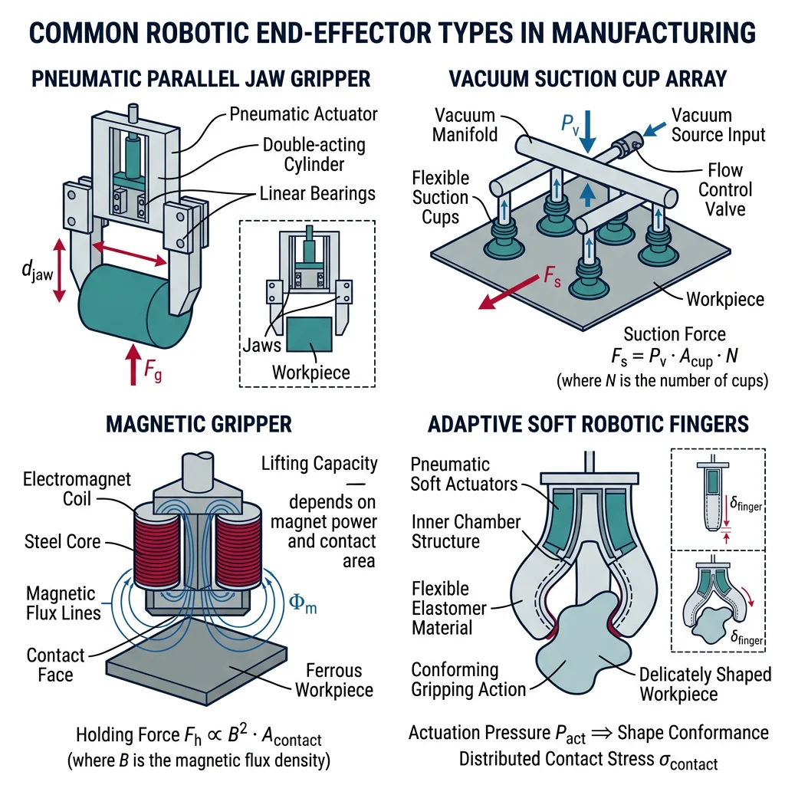
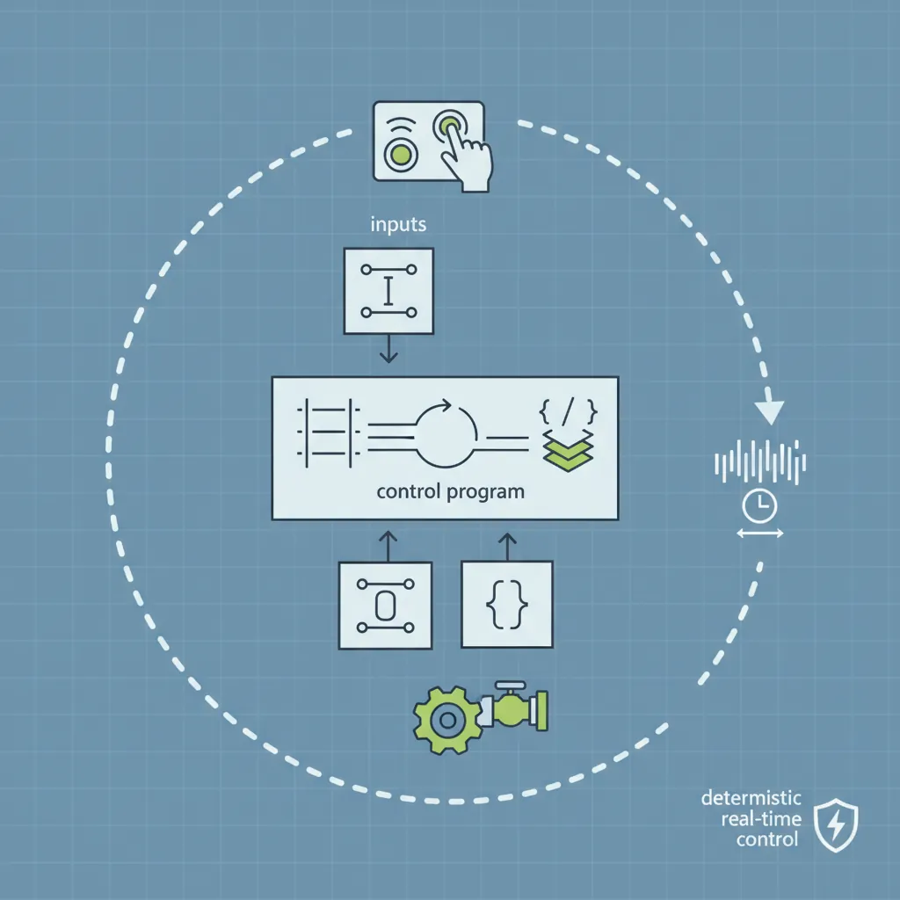
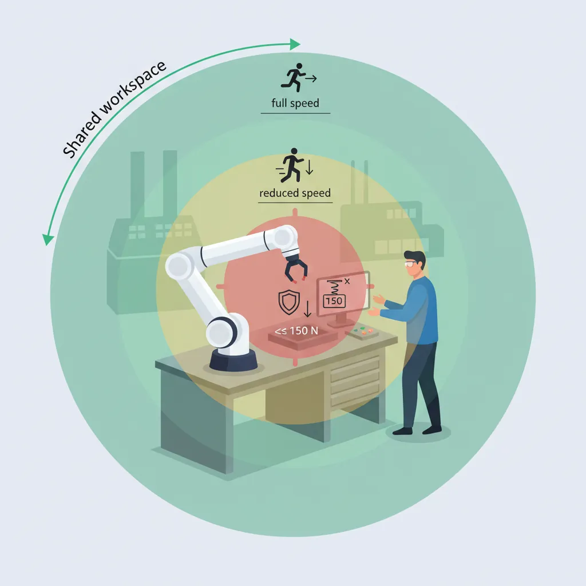
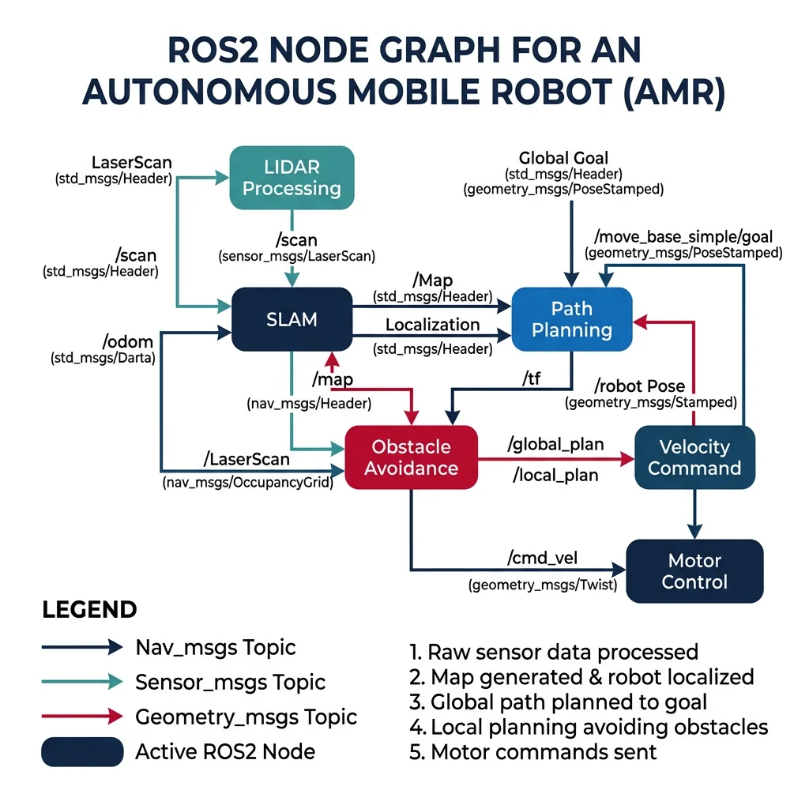

Industrial Robotics
Manufacturing Mastery
Manufacturing Systems & Process Foundations
Process taxonomy, physics, DFM/DFA, production economics, Theory of ConstraintsCasting, Forging & Metal Forming
Sand/investment/die casting, open/closed-die forging, rolling, extrusion, deep drawingMachining & CNC Technology
Cutting mechanics, tool materials, GD&T, multi-axis machining, high-speed machining, CAMWelding, Joining & Assembly
Arc/MIG/TIG/laser/friction stir welding, brazing, adhesive bonding, weld metallurgyAdditive Manufacturing & Hybrid Processes
PBF, DED, binder jetting, topology optimization, in-situ monitoringQuality Control, Metrology & Inspection
SPC, control charts, CMM, NDT, surface metrology, reliabilityLean Manufacturing & Operational Excellence
5S, Kaizen, VSM, JIT, Kanban, Six Sigma, OEEManufacturing Automation & Robotics
Industrial robotics, PLC, sensors, cobots, vision systems, safetyIndustry 4.0 & Smart Factories
CPS, IIoT, digital twins, predictive maintenance, MES, cloud manufacturingManufacturing Economics & Strategy
Cost modeling, capital investment, facility layout, global supply chainsSustainability & Green Manufacturing
LCA, circular economy, energy efficiency, carbon footprint reductionAdvanced & Frontier Manufacturing
Nano-manufacturing, semiconductor fabrication, bio-manufacturing, autonomous systemsIndustrial robots are programmable, multi-axis manipulators used for welding, painting, assembly, material handling, and machining. Over 4 million industrial robots are deployed globally (IFR 2024), with automotive, electronics, and metal fabrication as the largest users.

| Robot Type | DOF | Workspace | Payload | Speed | Typical Applications |
|---|---|---|---|---|---|
| Articulated (6-axis) | 6 | Spherical, large | 3-2,300 kg | Moderate | Welding, painting, assembly, material handling |
| SCARA | 4 | Cylindrical, planar | 1-20 kg | Very fast | Pick-and-place, PCB assembly, screw driving |
| Delta (Parallel) | 3-6 | Dome-shaped, small | 0.5-8 kg | Extremely fast (200+ picks/min) | Food packaging, pharma, light assembly |
| Cartesian (Gantry) | 3 | Rectangular | 5-500 kg | Moderate | CNC loading, palletizing, 3D printing |
| Collaborative (Cobot) | 6-7 | Spherical, limited | 1-35 kg | Slow (safety limited) | Human-robot teaming, inspection, testing |
Trajectory Planning & Control
Trajectory planning generates the path a robot follows between waypoints — specifying position, velocity, and acceleration at every time step. The two fundamental types:
Point-to-Point (PTP)
Robot moves at maximum speed between points using joint interpolation — each joint moves independently. Path between points is not controlled (may curve unpredictably). Used for: pick-and-place, loading/unloading where only start and end positions matter. Fastest motion type.
Continuous Path (CP)
Robot follows a precisely defined path in Cartesian space — straight lines, arcs, or complex curves. The controller computes inverse kinematics at every interpolation step (typically 1 ms). Used for: welding seams, painting, glue dispensing, machining where path accuracy matters.
import numpy as np
# Robot Forward Kinematics - 2-Link Planar Arm
# Demonstrates FK calculation from joint angles to end-effector position
# Link parameters
L1 = 0.5 # meters (link 1 length — upper arm)
L2 = 0.4 # meters (link 2 length — forearm)
# Joint angles in degrees
theta1_deg = 45 # shoulder joint
theta2_deg = 30 # elbow joint (relative to link 1)
# Convert to radians
theta1 = np.radians(theta1_deg)
theta2 = np.radians(theta2_deg)
# Forward Kinematics
# Elbow position
x_elbow = L1 * np.cos(theta1)
y_elbow = L1 * np.sin(theta1)
# End-effector position
x_ee = L1 * np.cos(theta1) + L2 * np.cos(theta1 + theta2)
y_ee = L1 * np.sin(theta1) + L2 * np.sin(theta1 + theta2)
print("2-Link Planar Robot — Forward Kinematics")
print("=" * 50)
print(f"Link lengths: L1 = {L1}m, L2 = {L2}m")
print(f"Joint angles: θ1 = {theta1_deg}°, θ2 = {theta2_deg}°")
print(f"\nElbow position: ({x_elbow:.4f}, {y_elbow:.4f}) m")
print(f"End-effector position: ({x_ee:.4f}, {y_ee:.4f}) m")
# Inverse Kinematics — given target, find joint angles
target_x, target_y = 0.6, 0.3
# Using geometric approach
D = (target_x**2 + target_y**2 - L1**2 - L2**2) / (2 * L1 * L2)
if abs(D) <= 1:
theta2_ik = np.arctan2(np.sqrt(1 - D**2), D) # elbow-up solution
theta1_ik = np.arctan2(target_y, target_x) - np.arctan2(
L2 * np.sin(theta2_ik), L1 + L2 * np.cos(theta2_ik))
print(f"\nInverse Kinematics for target ({target_x}, {target_y}):")
print(f" θ1 = {np.degrees(theta1_ik):.2f}°")
print(f" θ2 = {np.degrees(theta2_ik):.2f}°")
# Verify
x_verify = L1*np.cos(theta1_ik) + L2*np.cos(theta1_ik + theta2_ik)
y_verify = L1*np.sin(theta1_ik) + L2*np.sin(theta1_ik + theta2_ik)
print(f" Verification: ({x_verify:.4f}, {y_verify:.4f}) m ✓")
else:
print(f"\nTarget ({target_x}, {target_y}) is UNREACHABLE!")
print(f"Max reach: {L1+L2:.2f}m, Distance: {np.sqrt(target_x**2+target_y**2):.2f}m")
End-Effector & Gripper Design
The end-effector (EOAT — End of Arm Tooling) is where the robot interacts with the workpiece. Choosing the right gripper can make or break a robotic cell:

| Gripper Type | Mechanism | Grip Force | Best For | Limitations |
|---|---|---|---|---|
| Pneumatic parallel | Air cylinder, 2-3 jaws | 50-500 N | Cylindrical parts, rigid objects | Binary open/close, no force control |
| Vacuum suction | Venturi or pump, cups | Depends on cup area | Flat/smooth surfaces (glass, sheet metal, boxes) | Porous/oily surfaces fail |
| Magnetic | Electromagnet or permanent | 5-1,000 N | Ferromagnetic materials (steel blanks) | Only works with magnetic materials |
| Servo-electric | Motor-driven fingers | Programmable | Variable parts, force-sensitive assembly | Slower, more expensive, complex control |
| Soft/adaptive | Compliant fingers, inflatable | Gentle | Delicate objects (fruit, electronics) | Lower precision, limited payload |
PLC, SCADA & Control Systems
A Programmable Logic Controller (PLC) is the industrial workhorse — a ruggedized computer that executes control programs in real-time, scanning inputs (sensors, switches), executing logic, and updating outputs (motors, valves, lights) every 1-10 milliseconds. PLCs replaced hardwired relay panels in the 1970s and now control everything from individual machines to entire production lines.

graph TD
L5["Level 5: ERP
Enterprise Resource Planning
SAP, Oracle"]
L4["Level 4: MES
Manufacturing Execution System
Scheduling, Quality"]
L3["Level 3: SCADA / HMI
Supervisory Control
Monitoring, Alarms"]
L2["Level 2: PLC / DCS
Programmable Logic Controllers
Real-time Control"]
L1["Level 1: Field Devices
Sensors, Actuators, Drives
I/O Modules"]
L0["Level 0: Physical Process
Machines, Motors, Valves"]
L5 --> L4
L4 --> L3
L3 --> L2
L2 --> L1
L1 --> L0
style L5 fill:#e8f4f4,stroke:#3B9797
style L4 fill:#f0f4f8,stroke:#16476A
style L3 fill:#f0f4f8,stroke:#16476A
style L2 fill:#132440,stroke:#132440,color:#fff
style L1 fill:#16476A,stroke:#132440,color:#fff
style L0 fill:#BF092F,stroke:#132440,color:#fff
| PLC Language (IEC 61131-3) | Style | Best For | Example Use |
|---|---|---|---|
| Ladder Diagram (LD) | Graphical — relay logic | Electricians, boolean logic, interlocks | Motor start/stop, safety circuits, conveyor sequencing |
| Function Block Diagram (FBD) | Graphical — data flow blocks | Continuous process control, PID loops | Temperature control, flow regulation, blending |
| Structured Text (ST) | Text — Pascal-like | Complex calculations, algorithms, data handling | Recipe management, statistical calculations, motion profiles |
| Sequential Function Chart (SFC) | Graphical — state machine | Sequential processes, batch operations | CNC tool change sequence, wash cycles, packaging |
| Instruction List (IL) | Text — assembly-like | Legacy systems, compact code | Simple logic (being deprecated) |
SCADA & HMI Systems
SCADA (Supervisory Control and Data Acquisition) provides centralized monitoring and control of entire factory systems — collecting data from hundreds of PLCs, displaying real-time dashboards on HMI (Human Machine Interface) screens, triggering alarms, logging historical data, and enabling remote control.
Case Study: SCADA in Automotive Paint Shop
A modern automotive paint shop is one of the most complex automated systems in manufacturing:
- Scale: 200+ robots, 500+ PLCs, 5,000+ I/O points, 300+ temperature/humidity sensors monitored by central SCADA
- Process: Pre-treatment → electrocoat → sealer → primer → basecoat → clearcoat — 8+ hours per body, 60 bodies/hour throughput
- SCADA role: Monitors booth temperature (±1°C), humidity (±2%), paint flow rates, film thickness (25-40 μm per layer), oven cure profiles
- Alarm management: 200+ alarm points prioritized by severity — Level 1 (safety) triggers immediate line stop, Level 4 (advisory) logged for review
Sensors, Actuators & Servo Control
Industrial automation relies on sensors to perceive the physical world and actuators to act on it. The control loop (sensor → controller → actuator) runs continuously:
| Sensor Category | Technology | Resolution | Application |
|---|---|---|---|
| Position | Encoder (incremental/absolute), resolver, LVDT | 0.001 mm - 1 μm | CNC axis position, robot joints, valve position |
| Proximity | Inductive, capacitive, ultrasonic, photoelectric | Binary or analog | Part detection, level sensing, end-of-travel |
| Force/Torque | Strain gauge, piezoelectric | 0.1 N | Assembly press-fit monitoring, robot collision detection |
| Temperature | Thermocouple, RTD, IR pyrometer | 0.1°C | Furnace control, weld monitoring, plastic molding |
| Vision | CCD/CMOS camera, 3D structured light | 5 μm - 1 mm | Inspection, guidance, barcode reading, defect detection |
| Flow | Coriolis, electromagnetic, ultrasonic | 0.1% | Coolant flow, paint flow, chemical dosing |
Cobots & Vision Systems
Collaborative robots (cobots) are designed to work safely alongside humans without safety fences. The market grew from $100M in 2015 to $2B+ in 2024 (Universal Robots, FANUC CRX, ABB GoFa lead). Cobots address a critical gap: tasks too complex for full automation but too ergonomically harmful or repetitive for humans.

| Safety Function | ISO Standard | Mechanism | Use Case |
|---|---|---|---|
| Safety-Rated Monitored Stop | ISO 10218-2 | Robot stops when human enters workspace, resumes on exit | Human loads part → steps back → robot processes |
| Hand Guiding | ISO 10218-2 | Human physically guides robot through motions | Teaching new paths, collaborative polishing/sanding |
| Speed & Separation Monitoring | ISO 15066 | Speed reduces as human approaches, stops at minimum separation | Shared workspace with variable human proximity |
| Power & Force Limiting | ISO/TS 15066 | Robot limits force to non-injurious levels (≤150N for hand contact) | Direct human-robot contact tasks (assembly, inspection assist) |
Machine Vision & Inspection
Machine vision gives robots "eyes" — cameras and algorithms that enable part identification, quality inspection, robot guidance, and measurement. Modern vision systems use deep learning (CNNs) to achieve human-level defect detection at 100× the speed.
Case Study: BMW Vision-Guided Quality Inspection
BMW's Dingolfing plant uses AI-powered vision systems across multiple quality gates:
- Paint inspection: 8 high-resolution cameras photograph every body panel → CNN identifies scratches, orange peel, inclusions, runs at 10 μm resolution — detecting defects invisible to human inspectors
- Gap & flush measurement: Structured light sensors measure body panel gaps (target: 4.0 ±0.5 mm) and flush (±0.3 mm) at 50 measurement points per vehicle in 20 seconds
- Results: 99.7% defect detection rate (vs 85% with human inspectors), 100% of vehicles inspected (vs 10% sampling previously)
Safety Standards (ISO 10218/15066)
Robot safety is governed by a hierarchy of standards. Every robotic cell must have a documented risk assessment before commissioning — identifying all hazards (pinch points, crush zones, ejected parts, electrical, pneumatic) and implementing adequate safeguards:
| Standard | Scope | Key Requirements |
|---|---|---|
| ISO 10218-1 | Robot design | Emergency stop, speed monitoring, axis limits, singular config protection |
| ISO 10218-2 | Robot integration & cells | Risk assessment, safeguarding, safety distances, control reliability |
| ISO/TS 15066 | Collaborative robots | Force/pressure limits by body region, biomechanical pain thresholds |
| IEC 62443 | Industrial cybersecurity | Network segmentation, access control, secure programming |
| ANSI/RIA 15.06 | US robot safety (aligns ISO 10218) | Safety distances, light curtain requirements, lockout/tagout |
AI-Driven & Autonomous Robotics
ROS (Robot Operating System) is an open-source middleware framework that provides tools, libraries, and conventions for building robot software. ROS2 (the production-grade version) uses DDS (Data Distribution Service) for real-time publish-subscribe communication between nodes — each node handles a specific function (vision, planning, control, localization).

AI & ML in Manufacturing Robotics
AI transforms robots from programmed machines (repeating fixed motions) to adaptive systems that learn, perceive, and decide:
| AI Application | Technique | Example | Impact |
|---|---|---|---|
| Bin picking | 3D vision + deep learning | Robot identifies randomly oriented parts in a bin and calculates grasp pose | Eliminates manual part feeding/fixturing |
| Adaptive welding | Seam tracking + reinforcement learning | Robot adjusts weld parameters in real-time based on gap variation | Handles ±2mm joint variation without reteaching |
| Predictive maintenance | LSTM/time-series on motor current | Detect bearing wear in robot joints 2 weeks before failure | Zero unplanned downtime, 40% maintenance cost reduction |
| Force-controlled assembly | Impedance control + learning | Peg-in-hole assembly with 0.02mm clearance, adapting to tolerance variation | Replaces skilled manual assembly |
Autonomous Robotic Swarms
Robotic swarms coordinate hundreds of simple robots to accomplish tasks that no single robot can handle. Inspired by ant colonies and bee swarms, manufacturing swarm systems enable reconfigurable production — robots dynamically form assembly stations, transport routes, and inspection formations based on production demand.